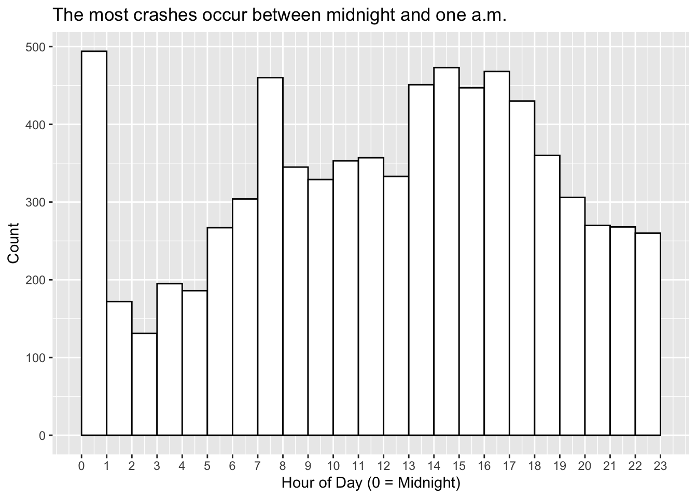

The data jamboree is a party of computing tools for solving the same data science problem. The main data set is the NYC motor vehicle collisions data. The real-time full data with documentation is available from NYC Open Data. Here we only consider a subset which contains the crashes in January, 2022. This dataset contains a column of zip code for each crash.
There are 178 unique zip codes in this subset data. The median household income at the zip code level from the American Community Survey can be obtained from the census with appropriate filters. We downloaded the income data for all the zip codes in the NY State from the 2020 American Community Survey. The column S1903_C03_015E contains the median income of all 1794 zip codes in NY State. The zip code level crash data of NYC can be merged with the median household income when zip code level analyses are of interest. The zip code boundaries of NYC can be downloaded from NYC open data.
The scientific exercises of the jamboree are:
Create a frequency table of the number of crashes by borough.
Create an hour variable with integer values from 0 to 23, and plot of the histogram of crashes by hour.
Check if the number of persons killed is the summation of the number of pedestrians killed, cyclist killed, and motorists killed. From now on, use the number of persons killed as the sum of the pedestrians, cyclists, and motorists killed.
Construct a cross table for the number of persons killed by the contributing factors of vehicle one. Collapse the contributing factors with a count of less than 100 to “other”. Is there any association between the contributing factors and the number of persons killed?
Create a new variable death which is one if the number of persons killed is 1 or more; and zero otherwise. Construct a cross table for death versus borough. Test the null hypothesis that the two variables are not associated.
Visualize the crashes using their latitude and longitude (and time, possibly in an animation).
Fit a logistic model with death as the outcome variable and covariates that are available in the data or can be engineered from the data. Example covariates are crash hour, borough, number of vehicles involved, etc. Interpret your results.
Aggregate the data to the zip-code level and connect with the census data at the zip-code level.
Visualize and model the count of crashes at the zip-code level.
Introduction - R for Statistical Computing
There are a great many things to love about R. I love R because it was my first computer language. I love R because I can do just about anything I can imagine in it. I love R because I can solve a problem multiple ways. None of these things are unique to R.
Speaking of solving a problem multiple ways, I will be focusing on the “tidyverse” way of doing things in R. I fully acknowledge that this is just one way of doing data science in R. It just happens to be a way I like and am an expert in, so that’s how I’m doing this analysis.
── Conflicts ───────────────────────────────────────── tidymodels_conflicts() ──
x scales::discard() masks purrr::discard()
x dplyr::filter() masks stats::filter()
x recipes::fixed() masks stringr::fixed()
x dplyr::lag() masks stats::lag()
x yardstick::spec() masks readr::spec()
x recipes::step() masks stats::step()
• Use tidymodels_prefer() to resolve common conflicts.
── Column specification ────────────────────────────────────────────────────────
Delimiter: ","
chr (16): CRASH DATE, BOROUGH, LOCATION, ON STREET NAME, CROSS STREET NAME,...
dbl (12): ZIP CODE, LATITUDE, LONGITUDE, NUMBER OF PERSONS INJURED, NUMBER ...
time (1): CRASH TIME
ℹ Use `spec()` to retrieve the full column specification for this data.
ℹ Specify the column types or set `show_col_types = FALSE` to quiet this message.
ℹ Use `spec()` to retrieve the full column specification for this data.
ℹ Specify the column types or set `show_col_types = FALSE` to quiet this message.
column_names <-as.character(income20[1,])
View the data
Examine the first 10 rows of each data set
Crash data
DT::datatable(head(jan22, 10))
Census data
DT::datatable(head(income20, 10))
Data cleaning
Crash Data
A few things to note:
Borough variable looks to have a lot of missing values
Latitude and longitude also have many missing
ZIP code is numeric, but should be a string
Street names have a mix of cases
Date variable is not a date object
jan22 %>% janitor::tabyl(BOROUGH) %>% knitr::kable(digits =3, caption ="Frequency table of number of crashes by borough. Over one third are missing.")
Frequency table of number of crashes by borough. Over one third are missing.
Check if the number of persons killed is the summation of the number of pedestrians killed, cyclist killed, and motorists killed. From now on, use the number of persons killed as the sum of the pedestrians, cyclists, and motorists killed.
deaths <- jan22 %>%select(COLLISION_ID, contains("KILLED")) %>%rowwise() %>%mutate(total_persons_killed =sum(`NUMBER OF PEDESTRIANS KILLED`, `NUMBER OF CYCLIST KILLED`,`NUMBER OF MOTORIST KILLED`),sums_match =`NUMBER OF PERSONS KILLED`== total_persons_killed)deaths %>%count(sums_match) %>% knitr::kable(caption="How often do the columns not sum correctly?")
ggplot(data = jan22) +geom_histogram(aes(x = hour), binwidth =1, center = .5,color ="black", fill ="white") +scale_x_continuous(breaks =0:23) +labs(x ="Hour of Day (0 = Midnight)",y ="Count",title ="The most crashes occur between midnight and one a.m.")

Persons killed by contributing factors
jan22 %>%mutate(cont_fct_1 =fct_lump_min(`CONTRIBUTING FACTOR VEHICLE 1`, min =100 )) %>%count(cont_fct_1, wt = total_persons_killed,sort = T) %>% DT::datatable(colnames =c("Contributing Factor 1", "Total number of Persons Killed" ), caption ="Most deaths occur when the contributing factor is unspecified.")
# test the null hypothesis that the two variables (death, borough) are not associated# from the {infer} packagechisq_test( jan22 %>%#filter(!is.na(BOROUGH)) %>%mutate(death =as.factor(death)), death ~ BOROUGH)
Warning in stats::chisq.test(table(x), ...): Chi-squared approximation may be
incorrect